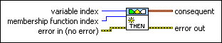

FL Create Consequent VI
Owning Palette: Rules VIs
Requires: Full Development System
Creates a consequent, or THEN portion, of a rule for a fuzzy system. A consequent consists of three parts: an output linguistic variable, an operator that specifies to calculate the degree of membership of the output linguistic variable within a linguistic term, and a linguistic term.
You can use the Build Array function or a loop to build an array of rule consequents that you create with this VI. You then can wire the array to the consequents input of the FL Create Rule VI.

 Add to the block diagram Add to the block diagram |
 Find on the palette Find on the palette |